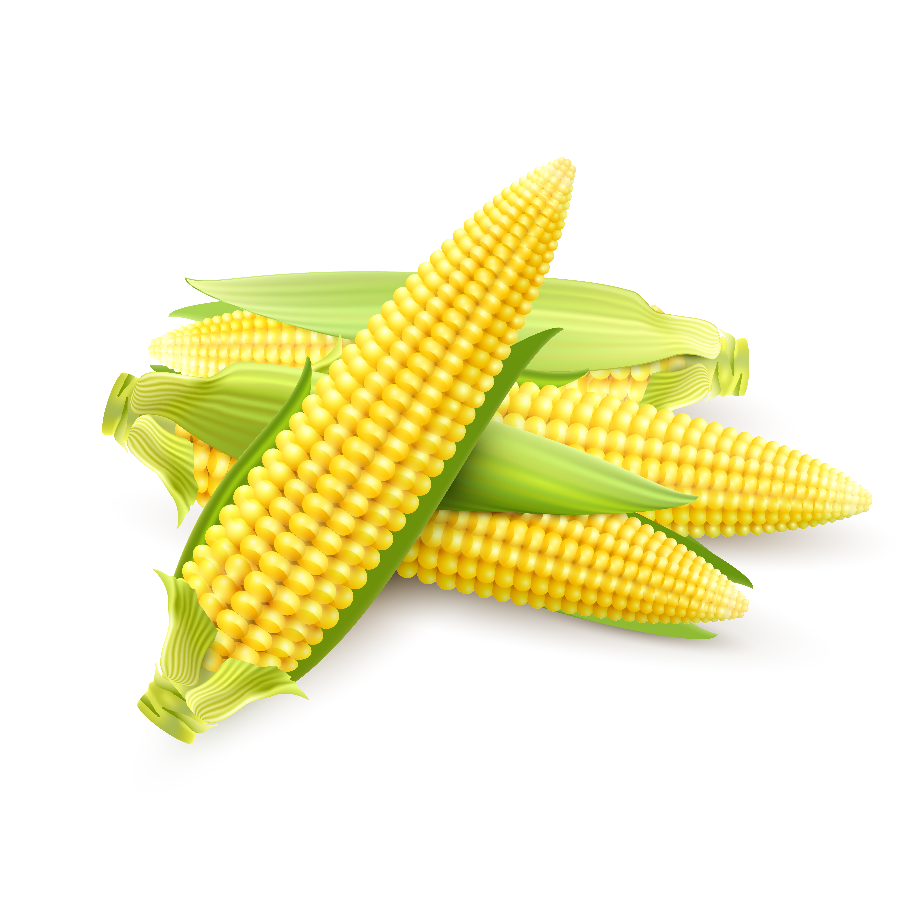
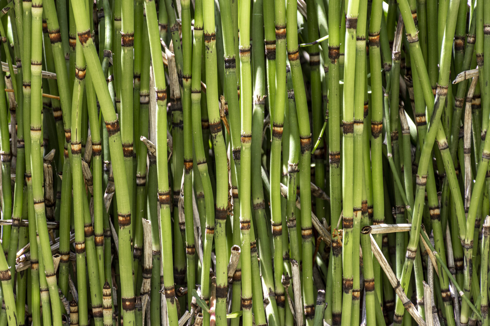
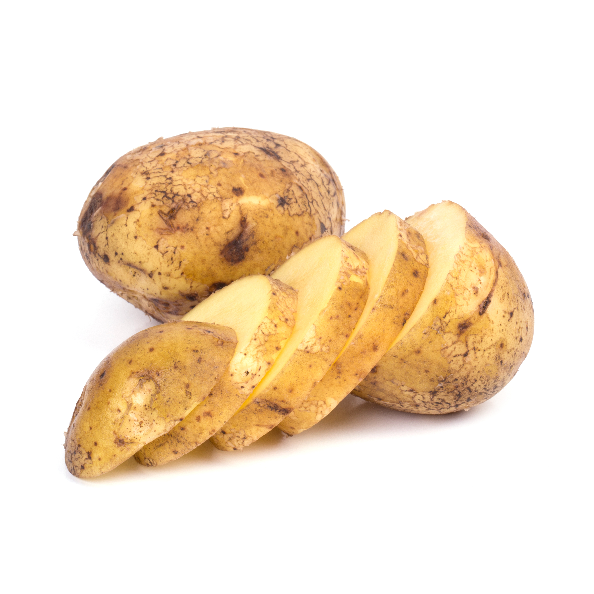

Wheat
Wheat is a staple crop used for producing flour and bread.

Rice
Rice is the most widely consumed staple food, grown in waterlogged fields.

Corn
Corn is used as food, animal feed, and for industrial products.

Sugarcane
Sugarcane is primarily grown for sugar and biofuel production.

Potato
Potato is a versatile crop used in many culinary dishes worldwide.

Onion
Onions are a common vegetable used for flavoring food in various cuisines.

Cucumber
Cucumber is a refreshing vegetable often used in salads and pickles.

Sunflower
Sunflower is grown for its seeds and oil, and it’s also an ornamental plant.

Grapes
Grapes are cultivated for fresh consumption and wine production.